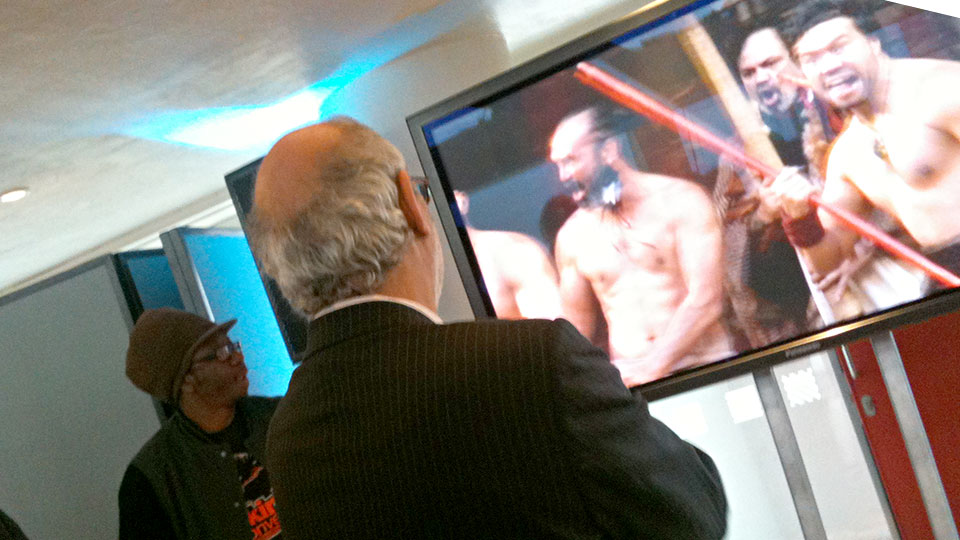
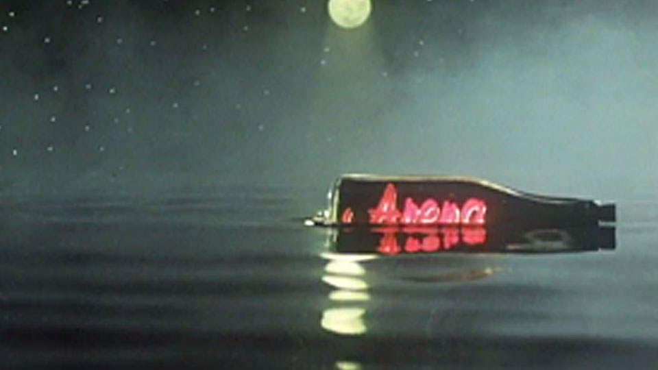
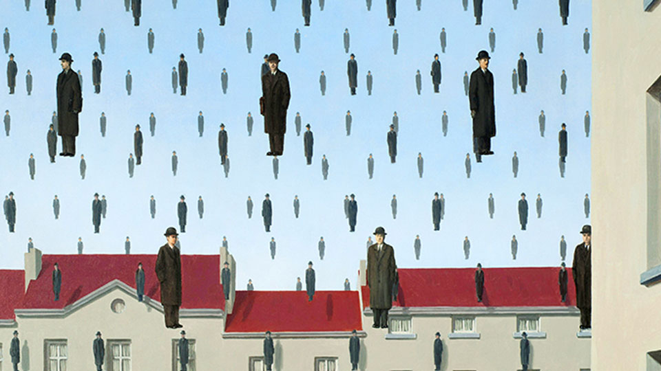

Workshops
Research and design training
Whether you are a student, a creative professional, or a C-level executive, my training workshops are designed to move you beyond the tools and into the mindset of a strategic designer.
Practical skills, problem solving and production pipelines
- Digital Communication Strategies for online channels
- Web and Mobile App Design Workshops
- Rapid prototype design and user testing
- Content Creation and Management strategies for creative workflow and production
- Training for all ages and abilities - KS3 to Post-Grad, C-Level executives to general public
- Experience in multiple sectors (Financial Services, Energy, Tourism, Education, Government)
- Tailored solutions to meet specific needs and goals
'Software is just the ink, but you need to be able to write the story. In my workshops, I help you develop the language and creative vision to bring your ideas to life.' - Paul Fillingham.

Don Letts and Alan Yentob at The Space launch event, Royal Festival Hall, London 2012.
Digital Inclusion and Accessibility
UK Government strategy in the design of inclusive digital technology is essential to improving access to online public services. Together with partner organisations and subject matter experts, developing secure and resilient services that are an essential part of a modern digital economy. Providing content, accessibility and design reviews reviews for public facing digital services.
- Align design with legally enforceable accessibility policies
- Implement user-centred design principles that cater to diverse needs
- Ensure digital services are inclusive and usable for all members of the public
- Content Creation and Management strategies for creative workflow and production
- Raise the level of digital competency within organisations to maximise staff potential

The Arena title sequence featured a floating neon in a bottle with a soundtrack by Brian Eno.
Outreach
- Training sessions promoting digital literacy in areas of structural unemployment
- Training programmes fostering regional heritage and deep connections with local people
- Working with libraries to address the needs of diverse community groups
- Enhancing local, regional and national tourism and heritage initiatives

Magritte's familiar bowler hatted Belgians motif.
Digital Marketing
- Online marketing workshops to enhance visibility and reach
- Creating digital marketing strategies and roadmaps
- Establishing online platforms to expand market presence
- Usability testing, analysis and feedback-loops to measure success
- Techniques in web development, AI and design